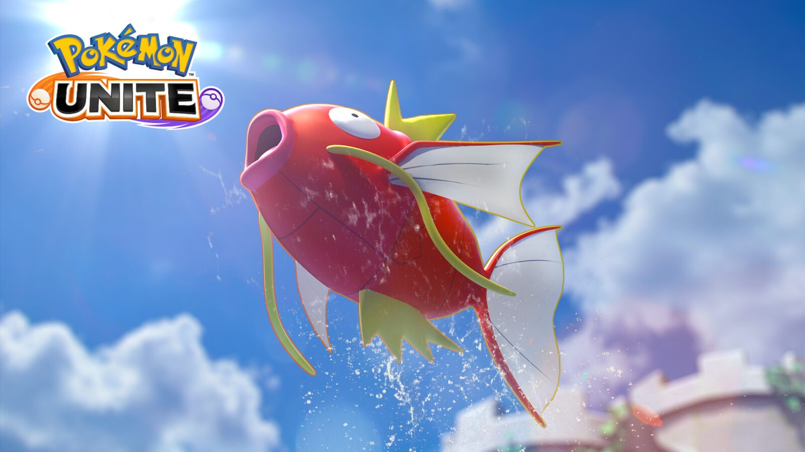

Pokémon UNITE: Magikarp chega a Ilha Aeos
por Guga Santos - 25/01/2024
Gyarados é um dos Pokémon favorito da comunidade, principalmente por ser uma evolução de um Pokémon que parece ser bem inofensivo. E agora Gyarados está chegou a Ilha Aeos em Pokémon UNITE, porém para evoluir seu Magikarp para Gyarados será bem diferente:
Sim, Magikarp irá ser jogável, e para evoluir para Gyarados você precisa deixar seu medidor de força cheio, não será por level!
A cada kill, a cada ponto feito, a cada assistência você ganha pontos para encher o medidor de força, com esse medidor cheio, Magikarp irá evoluir para Gyarados, lembrando, derrotar os NPC's não contribui para evolução de Gyarados então não utilize ele para ficar na linha do meio!
Porém se você não conseguir encher seu medidor de força, Magikarp irá evoluir de forma forçada no level 7.
Gyarados irá ter os ataques Dragon Breath e Aqua Tail na primeira linha de moveset, e na segunda linha terá Waterfall e Bounce, o nome da sua Unite Move é Dragon Current, causando um enorme furacão, a sua habilidade é Moxie.
Enfim, Gyarados chegou hoje, no dia 25 de Janeiro, será da categoria Versátil, seguindo padrão ficando 1 semana sendo vendido por 575 gemas, e depois sendo vendido por moedas, provavelmente no valor de 13.000 moedas Aeos. (Valor ainda não confirmado)
Mas e aí, o que achou do Gyarados no Pokémon UNITE? Será que vai ser complicado evoluir ele? Só jogando para saber.